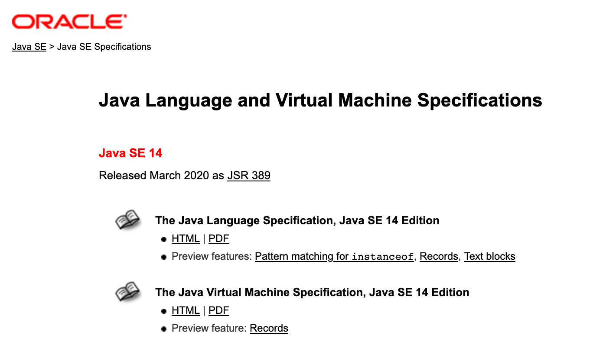
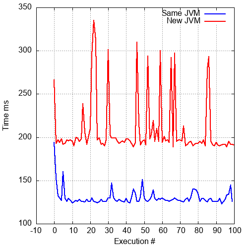

Sorry, your browser does not support SVG.

public class Excep { public static void fn2() throws IllegalArgumentException { throw new IllegalArgumentException(); } public static void fn1() throws IllegalArgumentException { fn2(); } public static void main(String[] args) throws IllegalArgumentException { fn1(); } }
Exception in thread "main" java.lang.IllegalArgumentException at Excep.fn2(Excep.java:3) at Excep.fn1(Excep.java:7) at Excep.main(Excep.java:11)
reference
javap
-c
-verbose
Java code:
public void count(int max) { int i = 0; while(i < max) i++; }
$ hexdump -C Count.class 00000000 ca fe ba be 00 00 00 38 ...
0: ldc #2 // String Hello World 2: astore_1
The core instructions which define the computations.
